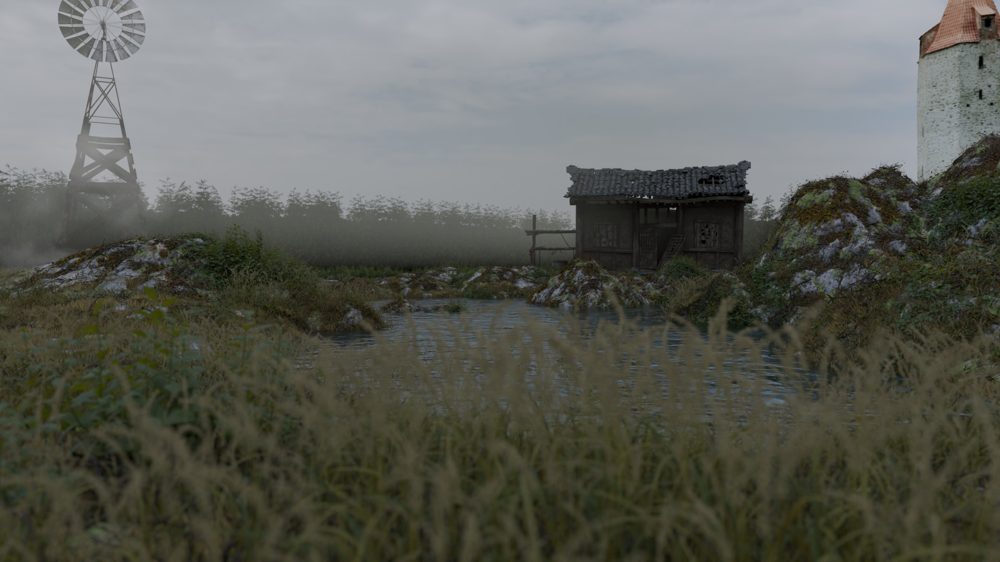
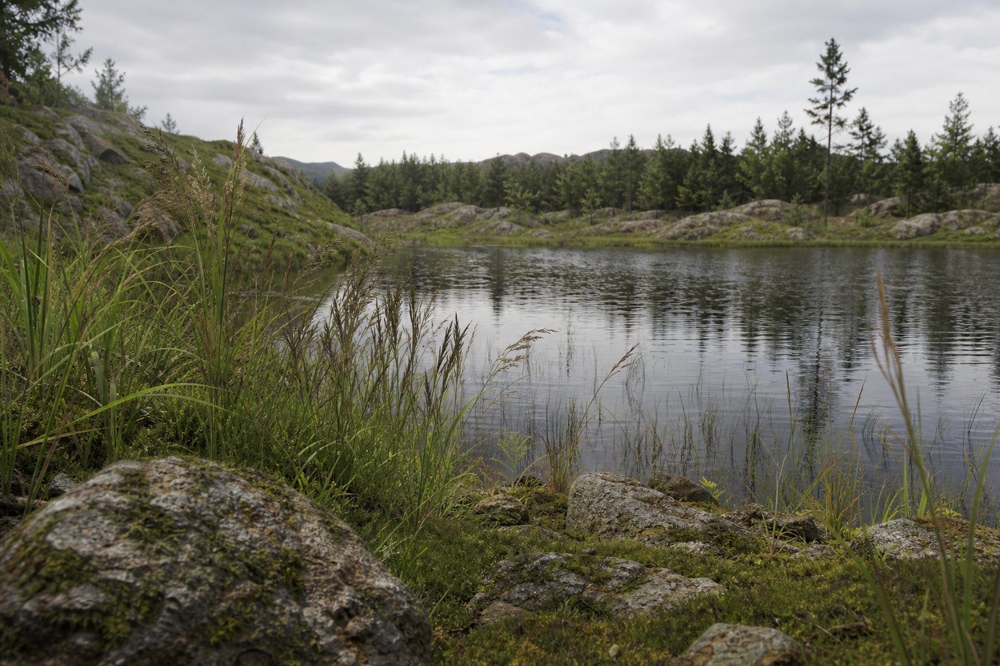

محیط سهبعدی سینماتیک
Cinematic 3D Environment • Blender • Cycles • Atmospheric Lighting
ملیکا شاهقدمی | تکنیکال آرتیست | کار اصلی + تنوع نوری

کار اصلی شما - محیط سینماتیک کامل با آسیاب بادی، کلبه متروکه، برج سنگی و دریاچه - Blender Cycles
درباره پروژه
محیط سینماتیک شخصی ساختهشده در Blender با ترکیب آسیاب بادی، کلبه متروکه، برج سنگی و دریاچه. صحنه با Cycles، PBR Materials، Atmospheric Lighting، Volumetric Fog و Particle Systems ساخته شده و شامل آب با Reflection و Displacement است.
BlenderCyclesPBRکار اصلیتنوع نوریCinematic
ویژگیهای کار اصلی
• ترکیب 4 عنصر در یک صحنه سینماتیک
• چمن و نیزار با Particle System
• آب با Reflection و Displacement
• مه حجمی و نورپردازی اتمسفریک
• چمن و نیزار با Particle System
• آب با Reflection و Displacement
• مه حجمی و نورپردازی اتمسفریک
ویژگیهای دریاچه
• دریاچه آرام با Reflection کامل
• نیزار با Particle System
• آب با Reflection و Displacement
• حس روز ابری بدون مه
• نیزار با Particle System
• آب با Reflection و Displacement
• حس روز ابری بدون مه
تنوع نوری - دریاچه و نیزار - Blender / Cycles

دریاچه و نیزار - روز ابری بدون مه - آب آرام